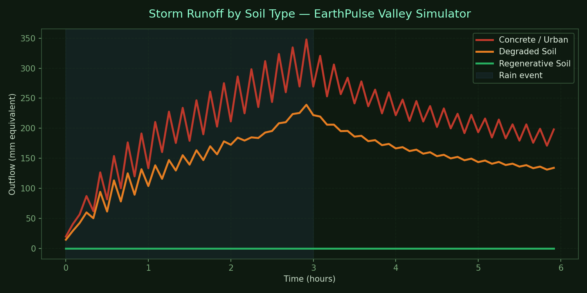

EarthPulse · Hydrology
Soil is Flood Infrastructure
Healthy soil infiltrates rain instead of shedding it — simultaneously
lowering flood peaks and raising dry-season water availability.
This model makes that argument visible, from a synthetic valley proof-of-concept
to a real watershed wired into live USGS storm data.
💡
The pitch: regenerative land management should be financed by paying farmers for the ecosystem service — funded by avoided FEMA/NFIP flood-insurance payouts.
Track A — Valley Simulator (v1)
A physics simulation of a synthetic valley watershed. Three soil scenarios share
identical topography and the same storm event — only the soil parameters change.
The hydrograph below is the argument made quantitative.
Infiltration rate: 0 mm/hr
Soil storage: 0 mm
All rain becomes immediate runoff.
Infiltration rate: 8 mm/hr
Soil storage: 20 mm
Compacted — rapid saturation, delayed peak.
Infiltration rate: 100 mm/hr
Soil storage: 120 mm
Deep organic layer — absorbs the storm.

Storm runoff over 6 hours (30 mm/hr rainfall, 3-hr event) · 50×50 cell valley grid ·
D8 flow routing · NumPy/Matplotlib · v1 illustrative parameters
Roadmap
A
Track A — Local Valley Simulator ✓
Grid-based Python physics model. Three soil scenarios, shared topography, comparative hydrograph output. Proof-of-concept complete.
B0
Phase 0 — One Real Watershed
Python notebook pulling real USGS streamflow and PRISM precipitation for White Oak Pastures, Georgia. Compute runoff ratio, baseflow/quickflow split, SCS Curve Number.
B1
Phase 1 — Water Earth Metric
Wire infiltration/runoff-ratio results into the EarthPulse Earth Metrics dashboard via a Cloudflare Pages Function calling USGS NWIS / NOAA APIs.
B2
Phase 2 — Live Storm Demo
Real-time NOAA National Water Model gauge feed with the regen counterfactual overlay rendered live during an actual storm. The unforgettable demo.
Honest Caveats
Runoff ratio isn't pure infiltration — ET and storage confound it. Track B output is a scenario, not a prediction.
SCS Curve Number is a lumped, empirical parameter. Scaling plot-scale gains to a whole watershed is approximate.
Infiltration benefits are largest for small/medium storms and shrink for extreme events as soil saturates. Don't overclaim on the 500-year flood — the real win is frequent floods and dry-season water.
Soil parameter values in Track A are illustrative. Real SSURGO measurements will replace them in Track B.